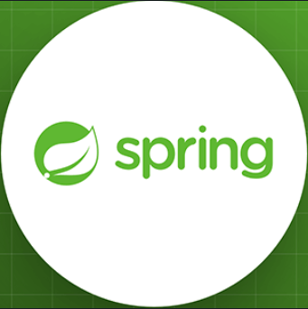
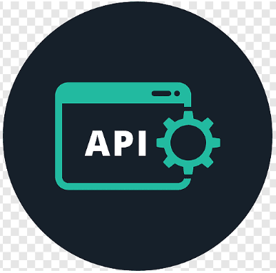

Home
About
Education
Skills
Projects
Experiences
Contact
Home
About
Education
Skills
Projects
Experiences
Contact
Home
About
Education
Skills
Projects
Experiences
Contact
Home
About
Education
Skills
Projects
Experiences
Contact

A passionate and aspiring Software Engineer on an exciting journey through the world of technology. Currently, I'm a dedicated
undergraduate student at the prestigious University of Colombo School of Computing, where I'm honing my skills and expanding my horizons.
As I journey towards becoming a seasoned software engineer, I'm on the lookout for internship opportunities to immerse myself in the practical
aspects of the field and actively contribute to meaningful real-world projects. My enthusiasm knows no bounds as I eagerly seek to apply my skills, collaborate with fellow innovators, and make a tangible impact within the dynamic tech industry. Java is more than just lines of code; it's the canvas where my creativity flourishes. It's the platform where I sculpt solutions, breathe life into concepts, and fearlessly address real-world challenges. Whether it's crafting robust applications or staying at the forefront of software engineering trends, Java remains my unwavering partner on this thrilling journey.
Greetings, I am Vakeeshan Paskaran, proudly representing the serene village of Kulavisuddan in Sri Lanka. As an enthusiastic undergraduate student at the University of Colombo School of Computing, I'm on a passionate journey through the realms of software development. With a strong foundation in Information Technology and an unwavering commitment to learning, I'm excited to contribute my skills and collaborate with a dynamic team of professionals to tackle real-world software challenges. My journey knows no bounds, and I am dedicated to continuous growth. Every challenge, every line of code, and every project is a stepping stone toward a brighter and more accomplished future. I don't just seek to complete tasks; I aim to enhance and innovate at every turn.
Amidst the coding landscape, Java holds a special place in my heart. It's not merely a programming language; it's the canvas where my creativity flourishes, the platform where I craft solutions, and the realm where I fearlessly tackle real-world challenges. Along the way, I've achieved significant milestones, including diplomas such as the "Comprehensive Master Java Developer" and "ICET Certified Developer." These experiences have expanded my knowledge and expertise, preparing me for the exciting journey that lies ahead. Thank you for taking the time to explore my corner of the internet. I'm eagerly anticipating the opportunity to connect, collaborate, and embark on remarkable projects with like-minded individuals. Let's make a meaningful impact together.
"Consistent practice, across all fields, remains the surest path to elevate our performance to remarkable heights."
My journey at the University of Colombo School of Computing (UCSC) began in November 2023 as an external undergraduate student pursuing a Bachelor of Information Technology degree. UCSC has provided me with a solid foundation in IT, starting with the successful completion of the FIT (Foundation in Information Technology) program. This educational adventure has ignited my passion for technology, making my time at UCSC both enriching and inspiring. The dynamic atmosphere, dedicated faculty, and cutting-edge resources at UCSC have been instrumental in my growth. I am dedicated to continuous learning and look forward to the challenges and opportunities that lie ahead as I advance in my undergraduate studies.
I completed the iCET Certified Developer Program from 2022 to 2023, and it was an amazing learning experience. I had the opportunity to delve into a diverse range of technologies and programming languages. The program covered Java, HTML, CSS, Spring Boot, MySQL, JavaScript, React, MongoDB, and REST APIs. The teaching methods were truly exceptional, thanks to the outstanding lectures and educators. I am sincerely grateful for this valuable learning journey.
I completed the Comprehensive Master Java Developer Program at the Institute of Java and Software Engineering from 2021 to 2022. This program offered excellent modules that helped me master the Java language thoroughly. It was a valuable and well-structured learning experience.
I completed my Advanced Level studies in the Biology stream at Vidyananda College from 2013 to 2015. Unfortunately, I passed Chemistry with a grade of C and Physics with an S, but I faced challenges in Biology, which resulted in an unsuccessful attempt. However, these experiences taught me valuable lessons, and I learned from my mistakes.
I completed my Ordinary Level education at Pramandu Vidyalaya, and I am delighted to report that I passed all my subjects with excellent results. The time I spent at the school was filled with unforgettable fun and sweet memories. This period of my life took place from 2010 to 2012.
I commenced my educational journey at Kulavisuddan G.T.M School, where I began my pre-school life and continued until I reached grade 7. This village school was like a second home to me, with the freedom to learn and grow. I enjoyed the company of friendly teachers, engaging in fun cultural programs, and participating in various sports activities. This period of my life at Kulavisuddan G.T.M School was one of the happiest times I have ever experienced. Unfortunately, due to the onset of a country's war, my family and I had to relocate to another town for safety reasons. This is when I joined Pramandu Vidyalaya, and my educational journey continued from 2000 to 2008.
Java
SpringBoot
JavaScript

React

Angular

MySQL

MongoDB

HTML5

CSS3
REST APIs
These skills define my journey as both a Software Engineer and Web Developer, serving as a testament to my unbridled passion for innovation and creation. They are more than mere tools; they are the expressive language through which I communicate with technology and the digital world. Each skill is a brushstroke on the canvas of my career, enabling me to explore a myriad of possibilities and craft meaningful solutions.
The "Students Management System" is a Java-based project with a user-friendly Swing GUI. This system is designed to efficiently manage student information, including their academic performance, attendance records, and more. It provides a comprehensive platform for educators and administrators to monitor and maintain student data effortlessly. With features such as recording and updating marks, tracking attendance, and organizing student details, this project simplifies the administrative tasks associated with student management. It's a valuable tool for educational institutions to enhance their record-keeping and ensure a smooth flow of information.
Technologies Used - Java & Swing GUI.
This web-based application is a Java project that is usually built for keeping the sales
recording made on a daily basis. It uses a MySQL database for recording the data of
the users, products, and orders made by the user.
Technologies used - Java, MySQL Database, JavaScript, HTML, CSS and Ajax.
The Virtual Bookstore project aims to replicate the experience of browsing and buying
books online by taking more than enough information about the particular book, this
process of exploring and purchasing books online will give a feel to users just as one
would in a physical bookstore.
Technologies used - SpringBoot, Spring Security, Spring Data JPA.
My personal website is a digital portfolio showcasing my skills and experiences. It
serves as a professional online presence and a platform to share insights and projects.
Technologies used - JavaScript, HTML, and CSS.
While my primary focus has been on pursuing a career in the IT field, I've also gathered valuable experiences in finance and marketing. These diverse backgrounds have honed my analytical and communication skills. I believe the fusion of these experiences will enable me to bring a fresh and innovative approach to the world of technology. As I seek an IT internship, I'm excited to leverage this unique blend of competencies to make a meaningful impact and learn from dynamic challenges.
As a Senior Credit Executive, I evaluated loan applications, made critical credit decisions, and ensured compliance with lending policies from 2017 to 2019. This role was instrumental in maintaining financial stability and minimizing risk for the organization. Effective communication and strong leadership were vital in this pivotal position.
I worked at Softlogic Retail Private Limited as a sales executive from 2016 to 2017. It was, unfortunately, one of the more mundane jobs I've experienced.
At PearlDots Aqua Lanka Private Limited, a leading water purification company, I had the privilege of serving as a Laboratory Technician from 2016 to 2017. In this role, I was responsible for conducting critical water quality analyses and ensuring the safety and purity of water products.
"When we dedicate ourselves to a company, our unwavering commitment and support become the pillars of our success".
Annadeavanmadu Road,
Kulavisuddan,
Nedunkerny,
Vavuniya,
Northern Province,
Sri Lanka.
Postal Code - 43200
+9477 025 1090 & +9424 410 0041